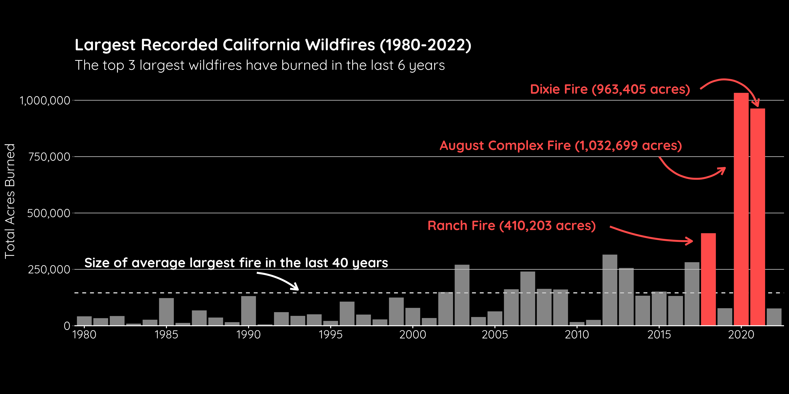
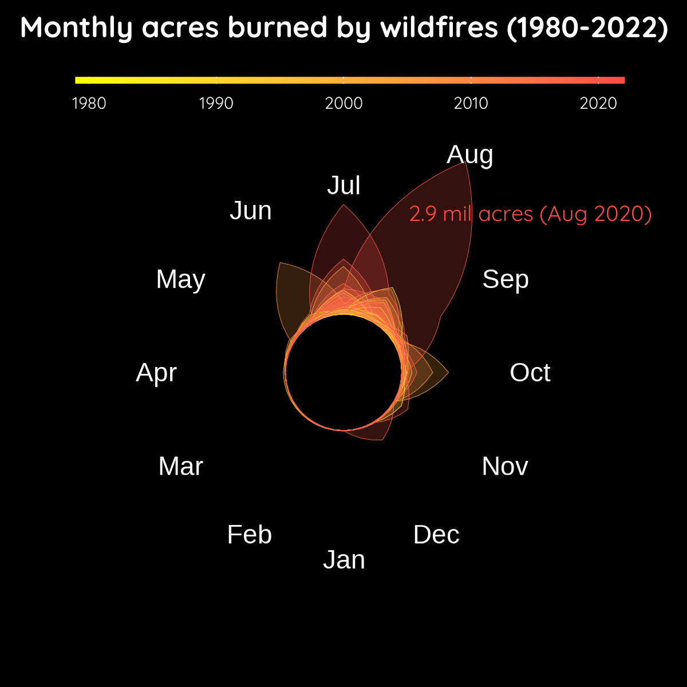
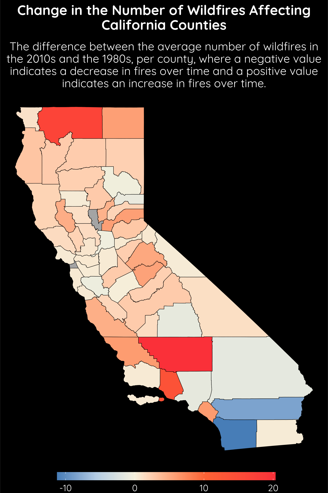
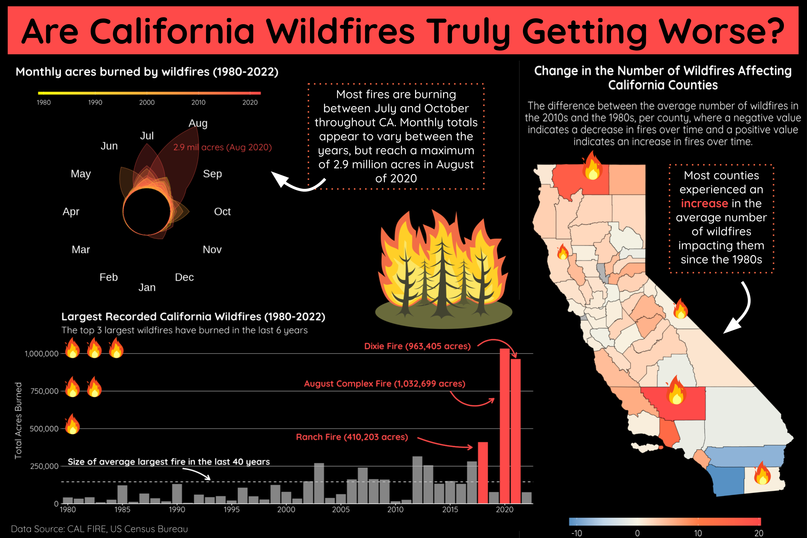

2020 was California’s worst recorded wildfire season since the 17th century, with 9,917 fires burning close to a total of 4 million acres. Lately, there has been a lot of discussion about if California wildfires have gotten worse in recent years (see here and here). Therefore, I wanted to conduct my own exploration to answer the burning question: Have California wildfires truly become worse in recent years? In order to answer this overarching question, I defined three smaller questions to direct my data exploration and visualization:
How has the size of the largest annual fire changed over time (1980 - 2022)?
How has the total amount of acres burned each month changed over time (1980 - 2022)?
How has the average number of fires impacting each California county changed since the 1980s?
The Data
(1) Fire Data
I am using California fire perimeters data from the California Department of Forestry and Fire Protection (CAL FIRE) on the California Open Data Portal. The relevant variables I used in my data visualization include:
YEAR: year the fire burned
FIRE_NAME: given name of fire
ALARM_DATE: date the fire first began
CONT_DATE: date the fire was declared contained
GIS_ACRES: total acres burned by the fire
geometry: shape of the perimeter of the full fire
(2) California County Subdivision TIGER/Line Shapefiles
Additionally, I am using shapefiles from the United States Census Bureau of all counties in the state of California.
Infographic Plots
Clean data
Code
# county data ---# clean names ca_counties_clean <- ca_counties %>% janitor::clean_names() %>%# select relevant columnsselect(name, geometry)# fire data ----# clean namesca_fires_clean <- ca_fires_shape %>% janitor::clean_names() %>%# select necessary columnsselect(year, fire_name, alarm_date, cont_date, gis_acres, geometry) # Spatially join data to find what counties were impacted by what firesca_county_fires <-st_join(ca_fires_clean, ca_counties_clean) %>%rename(county_name = name)
Fonts and color palette
Code
# import fontsfont_add_google(name ="Quicksand", family ="Quicksand")# enable {showtext} for renderingshowtext_auto()# define red to be used throughoutred <-"#FE4A49"# define diverging color palette for choropleth mapfire_pal <-c("#FE4A49","#FF7944","#F7F3E3","#C0D6E9","#5791C4")
How has the size of the largest annual fire changed over time (1980 - 2022)?
To answer this first question, I created a histogram of the total acres burned by the largest fire recorded each year so that I could compare across the 40 years. I added a dashed line at the number of acres burned by the average largest fire in that timeframe so that we could see if there is a pattern over time of when the fires exceed that average value. Additionally, I used gghighlight to highlight the 3 largest fires that burned between 1980 and 2022, all of which happened in the past 6 years.
Code
# select largest fires each yearca_largest_fires <- ca_fires_clean %>%st_drop_geometry() %>%# select years 1980-2022filter(year %in% (1980:2022)) %>%# Majority of biscuit fire burned in Oregon so removing itfilter(fire_name !="BISCUIT") %>%group_by(year) %>%# select largest (by acres) for each yearslice_max(order_by = gis_acres, n =1)# create plotlargest_fires <-ggplot(data = ca_largest_fires) +# add horizontal line at the average size of the largest fire from 1908-2022geom_hline(yintercept =mean(ca_largest_fires$gis_acres),color ="white",linetype ="dashed") +# add columns indicating how large each fire wasgeom_col(aes(x = year, y = gis_acres), fill = red) +gghighlight(year %in%c(2018, 2020, 2021)) +labs(y ="Total Acres Burned",x ="",title ="Largest Recorded California Wildfires (1980-2022)",subtitle ="The top 3 largest wildfires have burned in the last 6 years") +# choose x axis labelsscale_x_discrete(breaks =c(1980, 1985, 1990, 1995, 2000, 2005, 2010, 2015, 2020)) +# add commas to large numbers on y-axisscale_y_continuous(labels = scales::label_comma(),expand =c(0,0),limits =c(0, 1100000)) +# add annotation to label the average lineannotate(geom ="text",# coord for text to livex =1, y =280000,label ="Size of average largest fire in the last 40 years",size =16,family ="Quicksand",fontface =2,color ="white",# so it doesn't run off plot spacehjust ="inward" ) +# add arrow from annotation to average lineannotate(geom ="curve",x =11.5, xend =14,y =235000, yend =160000,curvature =-0.15,arrow =arrow(length =unit(0.3, "cm")),linewidth =1,color ="white" ) +# label Ranch Fireannotate(geom ="text",x =27, y =445000,label ="Ranch Fire (410,203 acres)",color = red,size =16,family ="Quicksand",fontface =2 ) +# add arrow to Ranch Fire annotationannotate(geom ="curve",x =33, xend =38,y =440000, yend =375000,curvature =0.1,arrow =arrow(length =unit(0.3, "cm")),color = red,linewidth =1 ) +# label August Complex Fireannotate(geom ="text",x =30, y =800000,label="August Complex Fire (1,032,699 acres)",color = red,size =16,family ="Quicksand",fontface =2 ) +# add arrow to August Complex Fire annotationannotate(geom ="curve",x =36, xend =40,y =750000, yend =700000,curvature =0.5,arrow =arrow(length =unit(0.3, "cm")),color = red,linewidth =1 ) +# label Dixie Fireannotate(geom ="text",x =33, y =1050000,label="Dixie Fire (963,405 acres)",color = red,size =16,family ="Quicksand",fontface =2 ) +# add arrow to Dixie Fire annotationannotate(geom ="curve",x =38.5, xend =42,y =1050000, yend =974000,curvature =-0.6,arrow =arrow(length =unit(0.3, "cm")),color = red,linewidth =1 ) +theme( # remove unnecessary gridlinespanel.grid.major.x =element_blank(),panel.grid.minor.y =element_blank(),# thinner y-axis gridlinespanel.grid.major.y =element_line(linewidth =0.25),# define title size, fontface, margins, and adjust leftplot.title =element_text(size =56,face ="bold", margin =margin(t =0, r =0, b =0.25, l =0, unit="cm"),hjust =0),# define subtitle size and adjust leftplot.subtitle =element_text(size =48,hjust =0),# black plot backgroundplot.background =element_rect(fill ="black",color ="black"),# black panel backgroundpanel.background =element_rect(fill ="black"),# define white color and font family for all texttext =element_text(color ="white", family ="Quicksand"),# define axis title and text sizeaxis.title =element_text(size =45),axis.text =element_text(color ="white", size =40),# define color of x axis line and tick marksaxis.ticks.x =element_line(color ="white"),axis.line.x =element_line(color ="white"),# adjust aspect ratio to widen plotaspect.ratio =0.35 )largest_fires

How has the total amount of acres burned each month changed over time (1980 - 2022)?
This plot was inspired by Christophe Nicault’s Tidy Tuesday visualization. Since all of my plots include a time element, I wanted to experiment with demonstrating that time element in a different way for each plot. The colors used by Nicault looked just like fire to me and I loved the circular plot for showing time on a monthly scale. Therefore, I used Nicault’s code as a framework to build a similar plot to investigate how many acres were burned each month across California and across the years 1980 to 2022.
Code
# create table with total acres burned each month from 1980-2022calendar <- ca_fires_clean %>%# drop geometriesst_drop_geometry() %>%# convert year to datemutate(year =as.Date(year, format ="%Y")) %>%mutate(year =year(year)) %>%# select 1980-2022filter(year %in%c(1980:2022)) %>%# grab month out of fire alarm datemutate(month =month(alarm_date)) %>%group_by(year, month) %>%# calculate total acres burned each month of each yearsummarise(monthly_total =sum(gis_acres)) %>%ungroup()# duplicate january for the circular plotmonth13 <- calendar %>%filter(month ==1) %>%mutate(year = (year -1),month =13)# designate where month labels will godates_axis <-tibble(x =seq(1,12,1),y =c(rep(2000000,7), 3000000, rep(2000000, 4)),mth = lubridate::month(seq(1,12,1), abbr=TRUE, label =TRUE))# create plotmonthly <- calendar %>%bind_rows(month13) %>%bind_rows(month13) %>%# https://stackoverflow.com/questions/66821598/why-is-ggplot-geom-ribbon-area-failing-with-facets-coord-polar-with-specificarrange(desc(year)) %>%ggplot(aes(month, monthly_total, group = year, fill = year, alpha =2040-year))+# area plot of total acres burned monthlygeom_area(position="identity", alpha =0.2) +# outline area plotgeom_line(aes(color = year), linewidth =0.1, alpha =1) +# add month labelsgeom_text(data=dates_axis, aes(x = x, y = y, label = mth), color ="white",inherit.aes =FALSE, size =12) +# polar coordinates for circlecoord_polar(start = pi) +# choose color gradientscale_fill_gradient(low ="yellow", high ="#FE4A49")+scale_color_gradient(low ="yellow", high ="#FE4A49")+scale_y_continuous(limits =c(0,3000000), # expand center of circleexpand =expansion(mult =c(0.3, 0)) ) +# define breaks along x axis for each monthscale_x_continuous(breaks =seq(1,12,1), limits =c(1,13), labels = lubridate::month(seq(1,12,1), abbr=TRUE, label =TRUE))+# remove axes, etc.theme_void()+guides(color ="none", alpha ="none",# adjust length and height of color barfill =guide_colorbar(barwidth =16, barheight =0.2)) +labs(title ="Monthly acres burned by wildfires (1980-2022)",fill ="") +theme(legend.direction ="horizontal",legend.position ="top",# define color and font family for all texttext =element_text(color ="white", family ="Quicksand"),# define size, fontface, margin and center titleplot.title =element_text(size =38,face ="bold", hjust =0.5,margin =margin(t =0.25, r =0, b =0.5, l =0, unit ="cm")),# define size of legend textlegend.text =element_text(size =22),# define margins of legend to decrease black space between legend and plotlegend.box.margin =margin(t =0, r =0, b =-1, l =0, unit ="cm"),# black plot backgroundpanel.background =element_rect(fill ="black"),plot.background =element_rect(fill ="black"),plot.margin =margin(unit(c(0, 0, 0, 0), "cm"))) +# add annotation for largest amount of acres burned in one monthannotate(geom ="text",x =8.65, y =2900000,label="2.9 mil acres (Aug 2020)",color = red,size =10, family ="Quicksand",face ="bold")monthly

How has the average number of fires impacting each California county changed since the 1980s?
The first two plots were focusing more on severity of fires, so I wanted this plot to investigate the frequency of fires, i.e. are fires getting larger AND happening more often? To do this I spatially joined the fire and county data to find what counties were impacted by what fires. From there, I was able to count how many fires impacted each county each year. In order to compare over time, I calculated the average number of fires that impacted each county over the 1980s and the 2010s (I didn’t use the 2020s because I wanted a full decade of data). I subtracted the average in the 1980s from the average in the 2010s to find the change in fire frequency. I plotted this as a choropleth map, color each California county by the change in average number of fires impacting them. Positive values indicated that on average more fires affected those counties in the 2010s and negative values indicated that on average less fires affected those counties in the 2010s.
Code
# count average number of fires occurring in each county 1980scounty_counts_80 <- ca_county_fires %>%st_drop_geometry() %>%filter(year %in%c(1980:1989)) %>%group_by(county_name, year) %>%summarize(sum_80 =n()) %>%group_by(county_name) %>%summarize(avg_num_80 =round(mean(sum_80, na.rm =TRUE), 2)) %>%rename(name = county_name)# count average number of fires occurring in each county 2010scounty_counts_10 <- ca_county_fires %>%st_drop_geometry() %>%filter(year %in%c(2010:2019)) %>%group_by(county_name, year) %>%summarize(sum_10 =n()) %>%group_by(county_name) %>%summarize(avg_num_10 =round(mean(sum_10, na.rm =TRUE), 2)) %>%rename(name = county_name)# join average number of fires from each decade and calculate differencecounty_counts <-full_join(county_counts_10, county_counts_80)county_change <- county_counts %>%mutate(change = avg_num_10 - avg_num_80)# remove small islandsca_counties_clean_no_island <- ca_counties_clean %>%ms_filter_islands(min_area =1e13)# add fire counts to county datasetca_counties_counts <-full_join(ca_counties_clean_no_island, county_change)# define title and subtitletitle <-"Change in the Number of Wildfires Affecting California Counties"subtitle <-"The difference between the average number of wildfires in the 2010s and the 1980s, per county, where a negative value indicates a decrease in fires over time and a positive value indicates an increase in fires over time."# create choropleth mapmap_change <-ggplot() +geom_sf(data = ca_counties_counts, aes(fill = change),color ="black") +scale_fill_gradientn(colors =rev(fire_pal),na.value ="grey70",# make sure white is at 0values = scales::rescale(x =c(min(na.omit(ca_counties_counts)$change),0,max(na.omit(ca_counties_counts)$change) ))) +# add title and subtitlelabs(title =str_wrap(title, 50),subtitle =str_wrap(subtitle, 60),fill ="") +theme_void() +guides(fill =guide_colorbar(barwidth =20, barheight =0.75)) +theme(legend.position ="bottom",# define title font family, font face, size, margins, and centerplot.title =element_text(family ="Quicksand", face ="bold", size =48,margin =margin(t =0.25, r =0, b =0.25, l =0, unit ="cm"),hjust =0.5),# define subtitle font family, size and centerplot.subtitle =element_text(family ="Quicksand", size =36, hjust =0.5),# black plot backgroundplot.background =element_rect(fill ="black",color ="black"),# legend text color, size, and font familylegend.title =element_text(color ="white"),legend.text =element_text(color ="white", family ="Quicksand", size =12),text =element_text(color ="white"))map_change

ca_choropleth
Final Infographic
I joined all the plots together into a final infographic. Outside of R, I added some fire icons as well as a couple annotations with major takeaways from my visuals.

Design Elements
Graphic form: The histogram was the best way to compare the acres burned by the largest fires each year across time. I wanted to include a visualization with the map of California since this was the study area, so I found that a choropleth map was the best way to do this. Lastly, I was inspired by this (insert link) plot because it both looked a bit like fire and was a unique way to plot across time that I hadn’t encountered before. I wanted to stretch myself, so I used Christophe Nicault’s code as a guiding framework to build my own.
Text: I used the same typeface across all of my plots, increasing the size and bolding titles and important words. Additionally, I added annotations to my histogram and circular plot in a fire red color I used throughout my infographic to provide specific values and more information.
Themes: Since this is an infographic, I removed as many axes and unnecessary theme elements as possible to keep my plots simple and, hopefully, easily interpretable. Since I was using “fire” colors such as bright yellow and orange, especially in my circular plot, I plotted everything against a black background for more emphasis.
Colors: As I mentioned briefly above, I used a lot of bright reds, yellows, and oranges to simulate fire. I used a black background so that the bright colors are easily seen and look more fire-like. For my choropleth map, I am plotting negative and positive values, so I created a divergent color gradient. I used bright red to indicate large positive numbers (an increase in average number of fires) and blue to indicate large negative numbers (a decrease in average number of fires). I chose blue because the color is typically associated with coolness and water, which I believe are opposites of fire.
Typography: The typeface I chose, Quicksand, had many font options available and is sans serif. This was ideal because it makes it easier for audiences to read, and I feel like it adds a casualness to the infographic that I hope will make it less intimidating to audiences that are less familiar with interpreting data visualizations.
General design: I made the overall title the largest size and additionally made the written takeaways from each plot a larger size so that they could not be missed. I limited my subtitles to only pertinent information and kept the takeaways concise to avoid information overload. I made the choropleth map large enough to serve both as a reminder that this data is about California and so that the audience can clearly interpret color differences.
Contextualization: The California map, colors used throughout, and the fire images all work together to contextualize the California wildfire data.
Centering your primary message: I had so many ways I wanted to present this data, but I focused each of my plots on investigating change over time of either severity or frequency of fires. As written in my takeaway annotations, it is hard to say for sure, but it appears that California wildfires have increased in both frequency and severity since 1980.
Considering accessibility: The colors I used are colorblind-friendly and I ensured that all text and background colors meet or exceed the contrast ratio of 4.5:1. I have added alt text to my final infographic.
Applying a DEI lens: The infographic was designed so that someone with little knowledge of California wildfires could understand if the fires are getting worse. I took a very broad approach by visualizing across the entirety of the state, but I would need to do more if this exploration were to be used to direct future actions related to wildfires as communities that are underrepresented are often the most vulnerable to these wildfires.